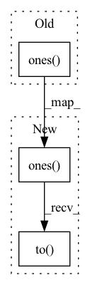

Pattern ID :980
Before Change
w = self.width // 2
z = []
for d in range(-w, w+1):
y = torch.diag(torch.ones( N-abs(d)) , diagonal=d) // (N, N)
y = y.view(1, N, N).expand(B, N, N) // (B, N, N)
y = torch.bmm(y, x) // (B, N, n_hidden)
z.append(y)After Change
w = self.context // 2
z = []
for d in range(-w, w+1):
y = torch.diag(torch.ones(N-abs(d)), diagonal=d).to( x.device) // (N, N)
y = y.view(1, N, N).expand(B, N, N) // (B, N, N)
y = torch.bmm(y, x) // (B, N, n_hidden)
z.append(y)In pattern: SUPERPATTERN
Frequency: 7
Non-data size: 3
Instances Fragment ID: 3512017
Project Name: keio-bioinformatics/mxfold2
Commit Name: c37c09d1ad2940a13dd4c82253c8607c8175115a
Time: 2019-11-06
Author: satoken@bio.keio.ac.jp
File Name: dnnfold/fold/layers.py
M Class Name: BilinearPairedLayer
N Class Name: BilinearPairedLayer
M Method Name: forward(2)
N Method Name: forward(2)
M Parent Class: nn.Module
N Parent Class: nn.Module
M File Name: dnnfold/fold/layers.py
N File Name: dnnfold/fold/layers.py
M Start Line: 92
M End Line: 92
N Start Line: 90
N End Line: 94
Before Change
device = torch.device("cuda") if torch.cuda.is_available() else torch.device("cpu")
batch_size = anchor_output.shape[0]
targets_sketch = torch.zeros(batch_size)
targets_photos = torch.ones( batch_size)
if epoch < 5:
lmbda = 0
elif epoch < 25:After Change
// Create targets for the domain loss(adversarial for the main model - as imposed by the GRL after every output)
batch_size = anchor_output.shape[0]
targets_sketch = torch.zeros(batch_size).to(self.device)
targets_photos = torch.ones(batch_size).to( self.device)
if epoch < 5:
lmbda = 0
elif epoch < 25: Fragment ID: 3512019
Project Name: ashok-arjun/zero-shot-sketch-based-image-retrieval
Commit Name: 928b6709fa51876e05205a350c9507285b8b934c
Time: 2020-08-08
Author: arjun2000ashok@gmail.com
File Name: model/loss.py
M Class Name: DetangledJointDomainLoss
N Class Name: DetangledJointDomainLoss
M Method Name: forward(6)
N Method Name: forward(6)
M Parent Class: nn.Module
N Parent Class: nn.Module
M File Name: model/loss.py
N File Name: model/loss.py
M Start Line: 105
M End Line: 114
N Start Line: 107
N End Line: 116
Before Change
super(_Multiply, self).__init__()
def forward(self, x):
result = torch.ones( x[0].size())
for t in x:
result *= t
return t
After Change
super(_Multiply, self).__init__()
def forward(self, x):
result = torch.ones(x[0].size()).to( self._device)
for t in x:
result *= t
Fragment ID: 3512018
Project Name: datasystemslab/geotorchai
Commit Name: be6f7d91b4abb532b8163f211dcf17b2e238c6b1
Time: 2022-06-04
Author: kchowdh1@asu.edu
File Name: geotorch/models/deep_stn_net.py
M Class Name: _Multiply
N Class Name: _Multiply
M Method Name: forward(2)
N Method Name: forward(2)
M Parent Class: nn.Module
N Parent Class: nn.Module
M File Name: geotorch/models/deep_stn_net.py
N File Name: geotorch/models/deep_stn_net.py
M Start Line: 56
M End Line: 56
N Start Line: 52
N End Line: 52
Before Change
self.linear = nn.Linear(3, 1)
def forward(self, input_list: dict[str, torch.Tensor]) -> dict[str, IntWithGetitem]:
x = input_list["foo"] if input_list else torch.ones( 3)
x = self.linear(x)
return {"foo": IntWithGetitem(x)}
After Change
def forward(self, input_list: dict[str, torch.Tensor]) -> dict[str, IntWithGetitem]:
device = torch.device("cuda" if torch.cuda.is_available() else "cpu")
x = input_list["foo"] if input_list else torch.ones(3).to( device)
x = self.linear(x)
return {"foo": IntWithGetitem(x)}
Fragment ID: 3512015
Project Name: tyleryep/torchinfo
Commit Name: bef1aa93cdf0bd90a5b3c02dbf99163a303aa9b9
Time: 2023-02-05
Author: tyler.yep@robinhood.com
File Name: tests/fixtures/models.py
M Class Name: EdgecaseInputOutputModel
N Class Name: EdgecaseInputOutputModel
M Method Name: forward(2)
N Method Name: forward(2)
M Parent Class: nn.Module
N Parent Class: nn.Module
M File Name: tests/fixtures/models.py
N File Name: tests/fixtures/models.py
M Start Line: 379
M End Line: 379
N Start Line: 379
N End Line: 380
Before Change
batch_size = X.shape[0]
num_step = X.shape[1]
num_nodes = X.shape[2]
mask = torch.ones( num_step, num_step)
mask = torch.tril(mask)
mask = torch.unsqueeze(torch.unsqueeze(mask, dim=0), dim=0)
mask = mask.repeat(self._K * batch_size, num_nodes, 1, 1)
After Change
batch_size = X.shape[0]
num_step = X.shape[1]
num_nodes = X.shape[2]
mask = torch.ones(num_step, num_step).to( X.device)
mask = torch.tril(mask)
mask = torch.unsqueeze(torch.unsqueeze(mask, dim=0), dim=0)
mask = mask.repeat(self._K * batch_size, num_nodes, 1, 1)
Fragment ID: 3512014
Project Name: benedekrozemberczki/pytorch_geometric_temporal
Commit Name: a7eebfc2cfea94ab0b852d75e01b02d9102b435f
Time: 2021-04-09
Author: He_YX@outlook.com
File Name: torch_geometric_temporal/nn/convolutional/gman.py
M Class Name: TemporalAttention
N Class Name: TemporalAttention
M Method Name: forward(3)
N Method Name: forward(3)
M Parent Class: nn.Module
N Parent Class: nn.Module
M File Name: torch_geometric_temporal/nn/convolutional/gman.py
N File Name: torch_geometric_temporal/nn/convolutional/gman.py
M Start Line: 255
M End Line: 262
N Start Line: 241
N End Line: 262